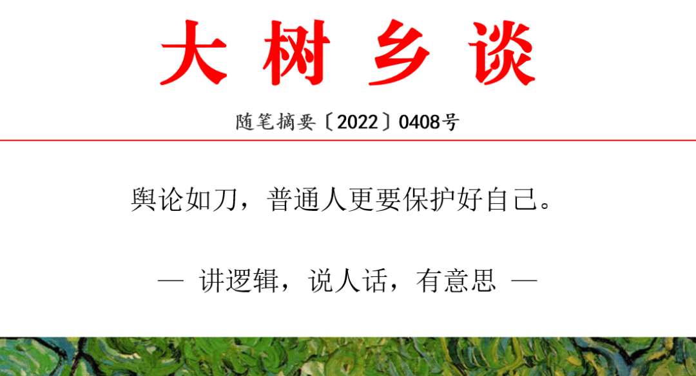

要像潜艇一样藏在水下

又一起网暴悲剧发生了，这原本是一个充满温情的故事。
上海虹桥一名女士想给住在青浦区的听障父亲送菜，因为疫情就算加100元小费，也一直没人接单，最后抱着试一试的想法联系了前一天为她送过菜的小哥。这位小哥从虹桥到青浦，跨越重重阻碍，一路上警察、防疫人员、居委会、志愿者层层接力，27公里来回花了7个小时，终于顺利将菜送到了这位女士的父亲手中。
这位小哥事后接受采访说，这一单不是为了钱，就是觉得这个时候大家都非常不容易，除了平台确定的配送费，也就拒绝这位女士额外的200元感谢费。
后来这位女士看小哥执意不收、也不知道小哥支付宝或者银行卡账号，于是在一些网友的建议下就给小哥充了200元话费，发了一条朋友圈表示感谢。这件事传开后，这位小哥所属的平台还给小哥颁发了“平民英雄奖”及2000元奖金。
如果故事到这里就结束了，那该多好。在这个世界上，对某些人来说，精神上的满足、帮助他人的幸福感，真的比物质金钱更加重要。
疫情之下，普通人更需要互帮互助、抱团取暖。
但遗憾的是，网络暴力再一次出现。明明当事人都很开心、企业也给了奖励、旁观者也深受感动，皆大欢喜。
结果在微博上，被讨论最多的竟然是“200元太少了”，甚至不断发酵为对这位女士极为恶毒的人身攻击。一个普通人、在如此困难的时刻、突然遭受前所未遇的网络暴力，悲剧就发生了。
据一些媒体报道：这位女士因不堪言语暴力，已跳楼身亡。
这无疑是一件悲剧，小镇也非常希望能有权威机构站出来辟谣，证明这位女士还活得好好的，只要人活着就还有希望。
但或许这确实是真的，已经过去2天了，仍未看到辟谣。
无从得知这位女士此前经历了什么，生活如何、又有什么困难，本来仅仅是做了菜想给20多公里外的听障父亲送去，发朋友圈也不过是想告诉人们世界上有温情存在、想要表达感恩，200元也只是表达对小哥谢意，也已经约好了疫情被控制后当面感谢。
但没想到却被一群网络暴徒盯上了，他们一路找到这位女士的微博大肆攻击，扣上了“抠门”“恶毒”“小气”“瞧不起”的种种帽子。普通人不是公众人物，突然被放在聚光灯下，被种种恶意的目光盯着，又如何能承受？
现在最难过的除了这位女士的家人，或许就是那位小哥吧，这位小哥接受了上海当地媒体“上观新闻”的采访，他说：看到顾客被网暴，我难过得睡不着觉。
其实对外卖小哥来说，只要配送费到位，哪怕多给10元都已经是对小哥辛苦的认可。这些在网上口诛笔伐说感谢费200元太少的，现实中又是如何做的呢？
现在有人在呼吁公开所有参与网暴者的ID以及评论，有一些参与网暴的人已经注销微博账号，但这又何尝不是新的一轮“网络暴力”？所谓“网暴”者说白了也不过是管不住自己的手，随口一句，自以为不过一句话没什么。
就同现在网络上对上海、上海人种种谩骂、谣言一样，说者大多数不过是一时的情绪表达，此前其他城市也都承受了这种谩骂。这当然步对，但想要通过“以暴制暴”只会导致更多的悲剧发生。
这个时代，学会闭嘴已经是一种美德和素养。
还是要从根上解决问题。仅仅上个月，人民日报已经连发三条针对网络暴力的评论，今年“清朗行动”确定的五个重点整治任务中，排在首位的就是“网络暴力、散播谣言等问题”。包括微博等平台也在升级预防网暴的能力，惩治一些网暴账号。
但是，这绝不是一朝一夕能实现的。
“人血馒头”哪怕从鲁迅那篇文章算起也已经一百多年了。
对于网络暴力，去年8月，小镇写过两篇文章：《“人血馒头”何时休》《舆论如刀，如何保护自己？》，希望每个人都好好读一下，尤其是第二篇。
不要觉得网络暴力只针对公众人物，普通人也会成为被网暴的对象，而大多数普通人根本没有足够的承受能力，遇到远超现实、毫无底线的辱骂、诅咒，几百人、几千人众口一词，有几个人能继续坚持自我，能够保持心平气和？
小镇与大家交流也一年了，关注小镇的读者朋友综合素质非常高，但照样有一些非常无底线的谩骂。刚开始小镇也有些气不过，后来看得多了也就习惯了，视而不见，如果实在过分直接拉黑。但是假如小镇有一个微博，向所有人公开，小镇也未必能承受地住。
不仅仅微博这类公开平台，一切可以被其他人看到的都可能是不知道何时爆炸的炸弹。就算第一轮看到的人没问题，但是一旦传播开呢？
在群里甚至私聊说几句话，都有可能被截图发出去，有些话离开那个语境不知道会被扭曲成什么样？
饭桌上也不安全，名人翻车的不多说了，前几天小镇看到一个例子，几个朋友聚会，有一个人开玩笑说自己喝酒了就要自己开车回去，结果刚走就被交警拦住了查酒驾，说是接到举报，幸亏真的没喝。
后来发现，是同桌的某个朋友举报的。酒后开车当然违法，但如果是真朋友，难道不应该立即阻止吗？为什么当面不说，人走了以后立刻报警？
这个世界当然很美好，但一定有一些妖魔鬼怪、魑魅魍魉藏在暗处，见不得人好、防不胜防。
小镇的父母就一再教育小镇，不要去炫耀，要注意保护自己。小镇出来工作这么多年，就连老家的驻京办都不知道有小镇这个人，小镇的父母也从不说小镇到底在干什么，省去了很多的麻烦甚至是风险。
不要觉得自己幸福的事，别人一定会祝福。自己的美好生活，自己和亲近的人知道就好，何必让大家看到呢？
网络信息的流动更容易放大，网络上的人也更容易释放内心的恶，几万人随口一句话叠在一起就是压死人的山。
衷心建议大家，一定要注意保护自己，尤其在网络上，千万要保护好自己的隐私，尽量不要把网络和现实关联。
微博尤其要小心，用的话不要当成朋友圈或者日记本，最好匿名、设置观看权限；至于朋友圈、小红书、抖音等等一切具有社交功能的平台，也要注意保护自己。
网络世界的治理还需要比较长的时间，普通人最安全的方式就是像一艘潜水艇一样，藏在水面以下，不要被不怀好意的目光发现。
其他文章推荐
■ 2022年中国房地产政策、房价及个人选择
如果喜欢，还请点赞、“在看”和关注吧 欢迎分享，让更多人发现“大树乡谈”